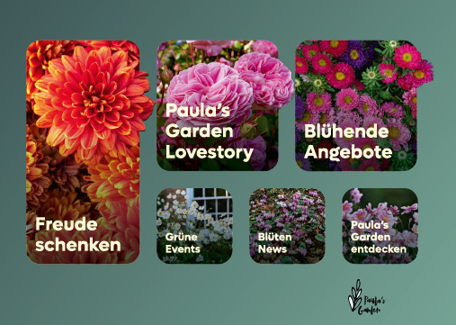

Web-App & Branding
Paulas Garden.
Meine Gesellenarbeit: eine Web-App für ein fiktives Gartencenter

Konzept
Paulas Garden ist eine intuitive Web-Anwendung, die Hobbygärtnern dabei hilft, ihren Garten effizient zu planen und zu pflegen. Ziel war es, komplexe botanische Informationen in ein zugängliches, spielerisches UI zu überführen, das Lust auf das nächste Gartenprojekt macht.
Zum Konzept (PDF)Screendesign


Farben & Form
Natürliche Grüntöne kombiniert mit modernen Akzenten spiegeln die Brücke zwischen Natur und digitaler Planung wider.